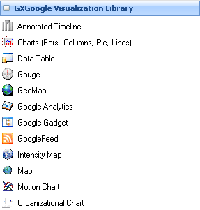
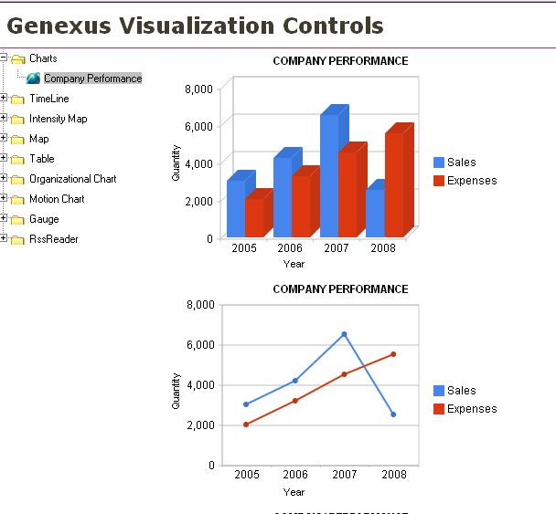
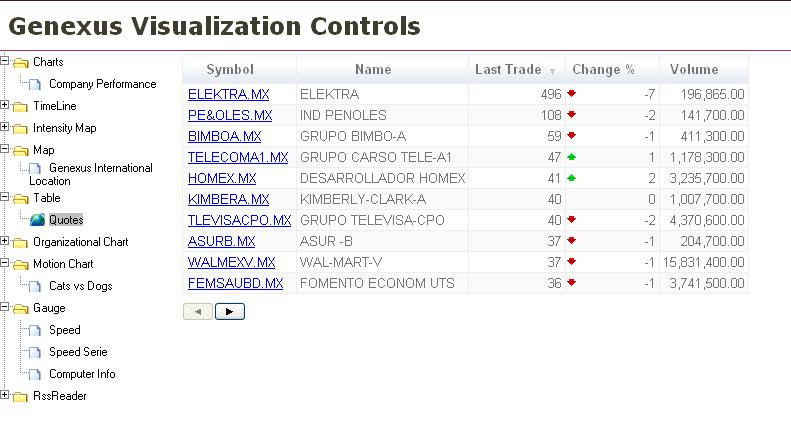

GXGoogle Visualization Library, based on Google Visualization API, expands the capabilities of data visualization using the GeneXus way. Now you can choose between several ways of showing your data including standard pie, intensity maps and motion charts. This is the list of available controls that you can use just dragging them in your form:
You can locate them as usual in the toolbox  Additionally we are publishing a Knowledge Base in our public server in order to show you several samples of using this bunch of controls. Some screenshots of the sample KB   IMPORTANT NOTE:As of GeneXus X Evolution 1 Beta 2 Build# 21802, the folder structure of GXGoogleVisualizationLibrary was changed. Now you will have a single folder named GXGoogleVisualizationLibrary under %GXEv1InstallationFolder%\UserControls containing all the controls inside. If you already have this library installed, please be sure to delete the single folder of each control under %GXEv1InstallationFolder%\UserControls before building your application in order to avoid duplicated controls.
|
| Backlinks |
| Category:Common Controls |